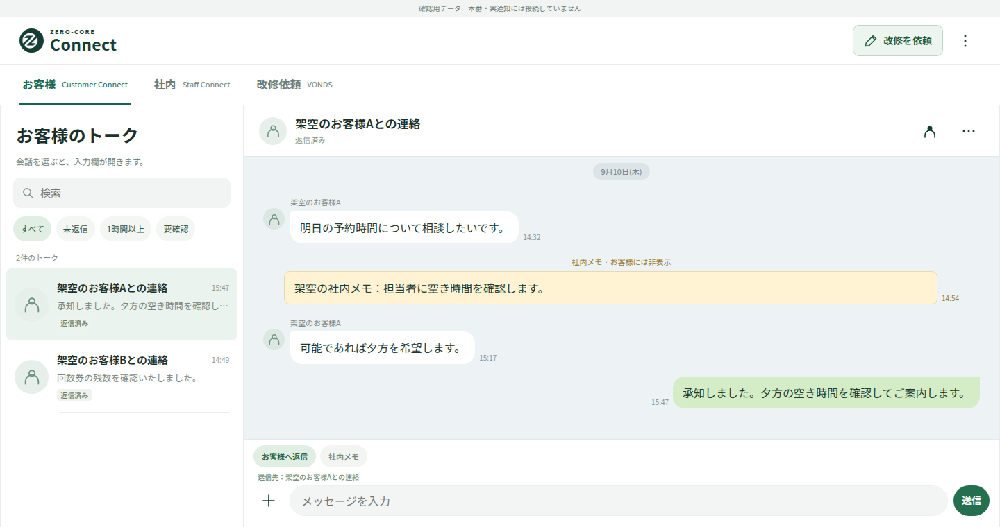
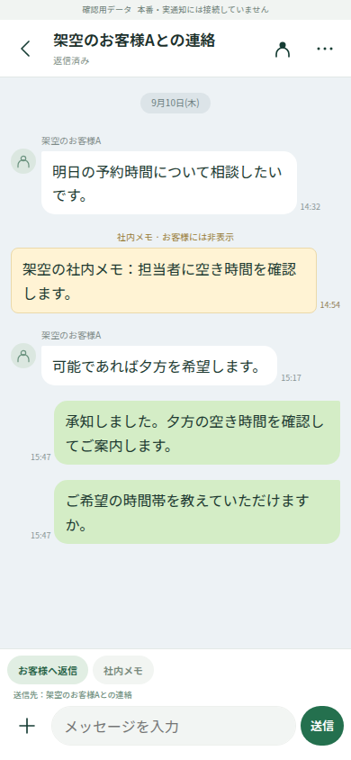

CONNECT · SCREEN PREVIEW
お客様への返信も、
社内の連絡も、ひとつの場所に。
ZERO-CORE Connectの確認用画面です。
相手を選び、内容を確認して、返信する。PCとスマートフォンの画面をご覧いただけます。
掲載画像は架空データを使った確認版です。このページは、ログインなしで画面と説明を共有できます。

HOW IT WORKS
宛先が分かる。
次の操作が見える。
01
お客様への返信
一覧から相手を選ぶと、会話と入力欄が開きます。送信先を入力欄のすぐ上に表示し、未返信の会話を一覧で確認できます。
02
社内トークと社内メモ
スタッフ同士の会話は「社内」タブへ。顧客との会話に残す社内メモは、返信とは色と保存先を分けて表示します。
03
VONDSへの改修依頼
幹部向けの「改修を依頼」から、件名と希望する変更を記入できます。確認版では依頼を保存するまでで、実送信や自動改修は開始しません。
04
スマートフォンでは会話に集中
会話を開くと、一覧からトーク中心の画面へ切り替わります。入力欄の「＋」から追加操作を開けます。

この確認版について
CMSから独立した操作確認用の画面です。表示される顧客・スタッフ・会話は架空データです。実際のお客様への送信、スマートフォンへの通知、予約確定には接続していません。操作用ページの会話データはブラウザごとに分かれ、1時間で削除されます。
画面の確認後は、操作用ページで
入力・返信・改修依頼をお試しいただけます。